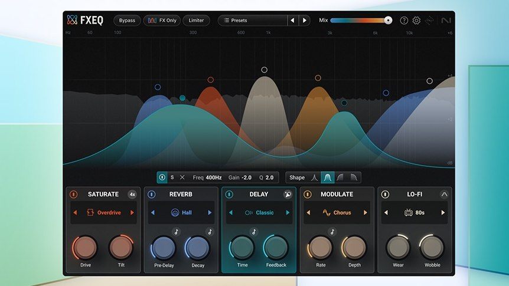
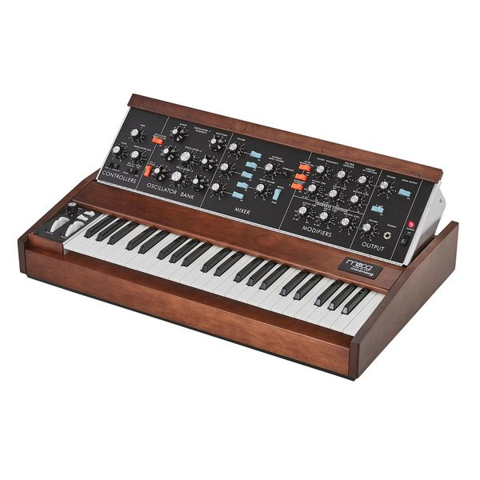
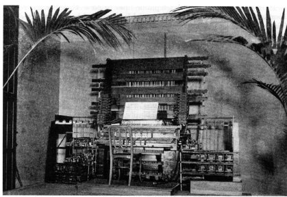

The Synthesizer - All about the history and the application of the synthesizer
The Synthesizer
-
FXEQ
iZotope
USA, 2025Multi-effects plugin in the Catalyst series that lets you “paint” saturation, reverb, delay, modulation, and lo-fi onto specific frequency bands via a 6-band parametric EQ, streamlining creative mixing.$49Digital
Multi-FXSoftware -
Kronos 3
Korg
Japan, 2025Flagship music workstation with nine synthesis engines, TouchView UI, KARMA and 16-track audio/MIDI sequencing—Korg’s next-gen all-in-one synth platform.$3399Digital
PolyphonicHardware -
 Osmose
Osmose
Expressive E
France, 2023The Osmose is a modern synthesizer featuring an MPE keyboard and the EaganMatrix engine co-developed with Haken Audio. It senses press, tilt, and shake per key for highly expressive control.$1799Digital
PolyphonicHardware -
 MiniFreak
MiniFreak
Arturia
France, 2022The MiniFreak is a six-voice hybrid synthesizer released by Arturia in 2022. It pairs dual digital sound engines (wavetable, FM, granular, virtual analog and more) with an analog multimode filter, an extensive modulation matrix, and a 37-note keybed with polyphonic aftertouch. Bundled with the MiniFreak V plugin, it lets producers move seamlessly between hardware and software versions of the same synth architecture.$599Hybrid
PolyphonicHardware - Plugin -
OB-X8
Oberheim
USA, 2022Modern analog polysynth combining the OB-X, OB-Xa, and OB-8 designs, co-created by Tom Oberheim and Sequential.$4999Analog
PolyphonicHardware -
 Pigments 4
Pigments 4
Arturia
France, 2022Pigments 4 blends wavetable, virtual analog, sample/granular, and additive synthesis in a software instrument with deep modulation capabilities and a user-friendly workflow. Get this synth!!$199Digital
PolyphonicPlugin -
Argon8
Modal Electronics
UK, 2021Wavetable synthesizer with 120 wavetables, morphing, and extensive modulation, available in multiple key sizes.$749Digital (Wavetable)
PolyphonicHardware -
Wavestate
Korg
Japan, 2020Modern reboot of the Wavestation with advanced wave sequencing 2.0, gigabytes of samples, and deep modulation.$799Digital
PolyphonicHardware -
Vital
Vital Audio
USA, 2020Free wavetable synthesizer with spectral warping, advanced modulation, and visual feedback for sound design. Get this synth!!!$0Digital (Wavetable)
PolyphonicPlugin -
 Pro 3
Pro 3
Sequential
USA, 2020Hybrid paraphonic synthesizer with three oscillators (two analog, one wavetable) and three classic filter types.$1599Hybrid
ParaphonicHardware -
Hydrasynth
Ashun Sound Machines
USA, 2019Wavemorphing polysynth with poly-aftertouch keybed, mutator modules, deep mod matrix, and effects.$1299Digital
PolyphonicHardware -
Phase Plant
Kilohearts
Sweden, 2019Modular software synth with freely routable oscillators, samplers, and modulators plus snap-in effects. Get this synth!!!$199Digital
PolyphonicPlugin -
 Summit
Summit
Novation
UK, 2019Bi-timbral 16-voice hybrid synthesizer based on Peak architecture with extended controls and keyboard.$2299Hybrid
PolyphonicHardware -
 Moog One
Moog One
Moog Music
USA, 2018Flagship analog polysynth (8- or 16-voice) with three VCOs per voice, dual filters, deep modulation, and effects.$7999Analog
PolyphonicHardware -
 Quantum
Quantum
Waldorf
Germany, 2018{"Hybrid powerhouse"=>"wavetable, VA, granular, and resonator digital oscillators through analog filters."}$4200Hybrid
PolyphonicHardware -
DeepMind 12
Behringer
Germany, 2016Affordable 12-voice analog polysynth inspired by the Juno-106 with built-in effects and modulation matrix.$999Analog
PolyphonicHardware -
 Minilogue
Minilogue
Korg
Japan, 20164-voice analog polysynth with oscilloscope display, versatile voice modes, and classic Korg tone.$499Analog
PolyphonicHardware -
 System-8
System-8
Roland
Japan, 2016Plug-Out synth hosting ACB models of Jupiter-8, Juno-106, and JX-3P alongside its own powerful engine.$1499Digital (ACB)
PolyphonicHardware -
 MicroBrute
MicroBrute
Arturia
France, 2013Compact monophonic analog synth with Steiner-Parker filter, sequencer, and aggressive Brute Factor.$329Analog
MonophonicHardware -
 Sub 37
Sub 37
Moog Music
USA, 2014Duophonic/mono analog synth; two VCOs plus sub, ladder filter, and hands-on control.$1499Analog
ParaphonicHardware -
Bass Station II
Novation
UK, 2013Monophonic analog synth with two oscillators, sub-oscillator, and classic/acid filter types.$499Analog
MonophonicHardware -
Volca Keys
Korg
Japan, 2013Compact battery-powered analog polyphonic lead synth with sequencer.$149Analog
PolyphonicHardware -
 OP-1
OP-1
Teenage Engineering
Sweden, 2011Portable synth/workstation with multiple engines, tape recorder, sequencers, and built-in mic/speaker.$1199Digital
PolyphonicHardware -
Monotron
Korg
Japan, 2010Palm-sized analog ribbon synth with MS-20 filter, battery-powered fun. Get one if you never had one.$59Analog
MonophonicHardware -
SH-01 GAIA
Roland
Japan, 2010Virtual analog synthesizer with three layers, simple controls, and hands-on editing.$749Virtual Analog
PolyphonicHardware -
Omnisphere 2
Spectrasonics
USA, 2015Flagship sample-based and synth hybrid plugin with massive library and deep synthesis engines.$499Hybrid
PolyphonicPlugin -
 Massive X
Massive X
Native Instruments
Germany, 2019Successor to Massive with advanced wavetable engine, routing, and sound design capabilities. Get this synth!!$199Digital (Wavetable)
PolyphonicPlugin -
 Serum
Serum
Xfer Records
USA, 2014Influential wavetable plugin synth known for pristine oscillators and intuitive editor. Get this synth!!!$189Digital (Wavetable)
PolyphonicPlugin -
 Diva
Diva
u-he
Germany, 2012Diva (Dinosaur Impersonating Virtual Analogue) is a software synthesizer that painstakingly models the oscillators, filters, and envelopes of classic analog instruments—Minimoog, Jupiter-8, Juno-60, MS-20, and more—letting users swap modules to build hybrid “dream synths.” Celebrated for its authentic warmth and punch (at the cost of high CPU), Diva has become a studio staple for producers seeking vintage analog tone in a modern plugin.$179Digital
PolyphonicPlugin -
 Prophet '08
Prophet '08
Dave Smith Instruments
USA, 2008Modern 8-voice analog polysynth reviving the Prophet legacy with DCOs and Curtis filters.$2099Analog
PolyphonicHardware -
Sylenth1
LennarDigital
Netherlands, 2007Virtual analog VST synth prized for lush sound, low CPU, and EDM staple status.$139Virtual Analog
PolyphonicPlugin -
 Massive
Massive
Native Instruments
Germany, 2007Influential wavetable soft synth, cornerstone of dubstep and EDM sound design.$149Digital (Wavetable)
PolyphonicPlugin -
 Zebra2
Zebra2
u-he
Germany, 2007Zebra2 is a versatile modular software synthesizer that blends virtual analog, wavetable, additive, FM, and spectral effects within a cable-free patching interface. Get this synth!!!$110;Digital
PolyphonicPlugin -
MicroKorg
Korg
Japan, 2002Compact VA synth/vocoder with mini keys, battery power, and versatile sound.$399Virtual Analog
PolyphonicHardware -
Minimoog Voyager
Moog Music
USA, 2002Updated Minimoog with patch memory, MIDI, and modern reliability.$2995Analog
MonophonicHardware -
 Andromeda A6
Andromeda A6
Alesis
USA, 200016-voice analog polysynth with deep modulation and analog VCO/VCF design.$2999Analog
PolyphonicHardware -
 Absynth
Absynth
Native Instruments
Germany, 2000Semi-modular soft synth famed for evolving pads and soundscapes.$199Digital
PolyphonicPlugin -
 Reason
Reason
Propellerhead
Sweden, 2000Virtual rack studio with multiple synths, samplers, and effects.$399Digital
PolyphonicPlugin -
Triton
Korg
Japan, 1999The Korg Triton is a PCM-based music workstation synthesizer introduced in 1999 as the successor to the Trinity. Its HI synthesis engine, touchscreen interface, dual polyphonic arpeggiators, and optional sampling/MOSS expansion boards made it a go-to production powerhouse for pop, R&B, and film scoring in the 2000s. Get this synth !!!$2999Digital
PolyphonicHardware - Plugin -
Reaktor
Native Instruments
Germany, 1999Modular DSP environment for building custom synths, samplers, and effects.$399Digital
PolyphonicPlugin -
 Virus A
Virus A
Access Music
Germany, 1997Iconic VA hardware synth series with lush pads and aggressive leads.$1499Virtual Analog
PolyphonicHardware -
 JP-8000
JP-8000
Roland
Japan, 1997VA polysynth introducing the Supersaw waveform for trance music.$1295Virtual Analog
PolyphonicHardware -
 ReBirth RB-338
ReBirth RB-338
Propellerhead
Sweden, 1997Software emulation of TB-303, TR-808, and TR-909 for acid and house production.$179Digital
MonophonicPlugin -
Prophecy
Korg
Japan, 1995Monophonic physical-modeling synthesizer employing Korg’s MOSS engine for expressive, diverse sound creation.$2199Digital
MonophonicHardware - Plugin -
 Wavestation
Wavestation
Korg
Japan, 1990Vector synthesis and wave sequencing for evolving textures.$2199Digital
PolyphonicHardware -
 M1
M1
Korg
Japan, 1988Best-selling workstation with PCM engine, sequencer, and iconic presets. Get this synth!!!$2166PCM Digital
PolyphonicHardware - Plugin -
 D-50
D-50
Roland
Japan, 1987LA synthesis combining PCM attacks with synthesized sustain waves.$1995Digital (LA)
PolyphonicHardware -
DX7
Yamaha
Japan, 1983FM synth that defined the 80s with electric pianos, basses, and bells.$2000Digital (FM)
PolyphonicHardware -
Jupiter-8
Roland
Japan, 1981Flagship analog polysynth with lush pads and punchy bass.$5295Analog
PolyphonicHardware -
Prophet-5
Sequential Circuits
USA, 1978First programmable polyphonic synth with analog VCOs and filters.$4495Analog
PolyphonicHardware -
MS-20
Korg
Japan, 1978Semi-modular mono synth with dual filters and patch bay.$750Analog
MonophonicHardware -
 CS-80
CS-80
Yamaha
Japan, 1976Expressive polyphonic synth with poly-aftertouch and ribbon control.$6900Analog
PolyphonicHardware -
 Two Voice
Two Voice
Oberheim
USA, 1975Dual SEM-based analog synthesizer with a 37-key keyboard, built-in 8-step sequencer, and two-voice polyphony—one of the earliest commercially available polyphonic synths.$2000Analog
DuophonicHardware -
 2600
2600
ARP
USA, 1971Semi-modular analog synth famous for R2-D2 sounds.$6950Analog
MonophonicHardware -
Minimoog Model D
Moog Music
USA, 1970Portable mono synth that set the standard for subtractive synthesis.$4999Analog
MonophonicHardware -
 VCS3
VCS3
EMS
UK, 1969Portable analog synth with pin-matrix patching.$800Analog
MonophonicHardware -
 Moog Modular
Moog Modular
Moog Music
USA, 1965First commercial modular synth, used by Wendy Carlos on Switched-On Bach.$11000Analog Modular
MonophonicHardware -
Buchla Series 100
Buchla
USA, 1963Early modular system commissioned by the San Francisco Tape Music Center.$5000Analog Modular
MonophonicHardware -
Teleharmonium
Thaddeus Cahill
USA, 1897Early Dynamophone, like an electric organ$?AdditiveHardware
Let's add one synthesizer a day challenge:
Do you like to add a synthesizer? Email to mat@thesynthesizer.org.